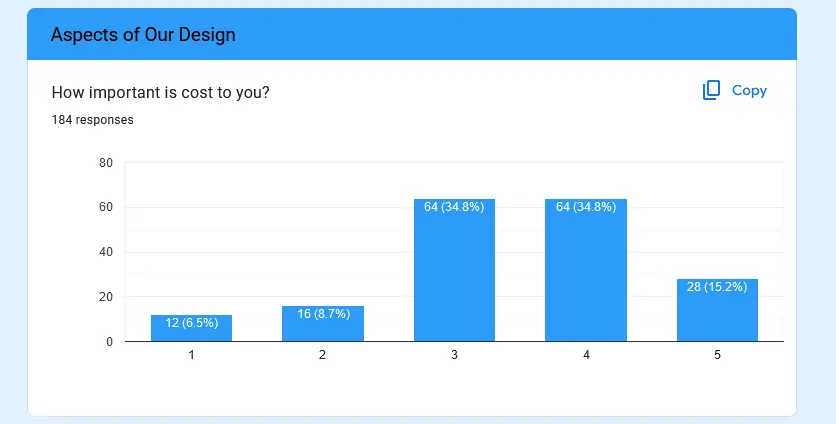
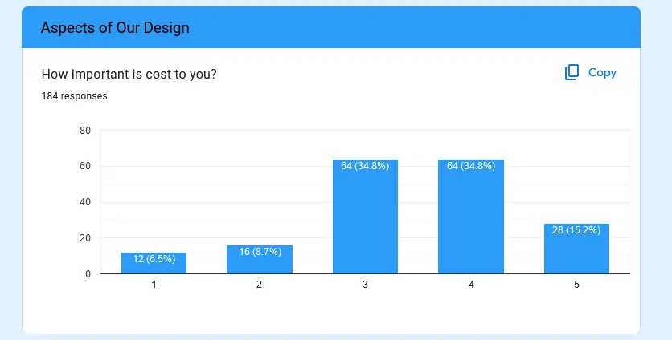
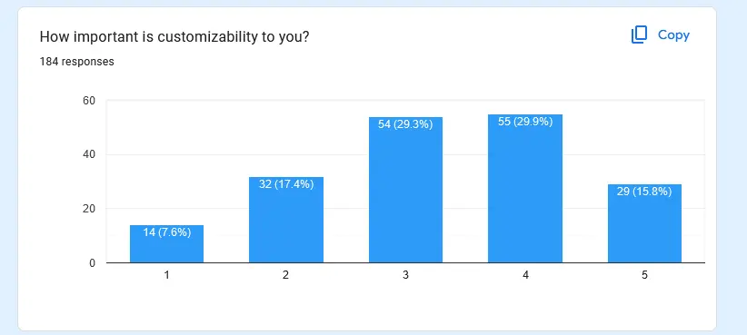
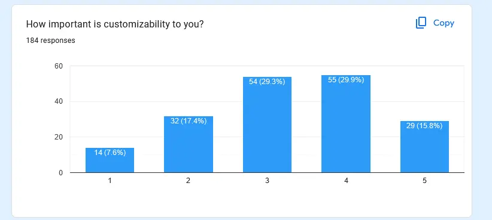

Design Process

INTENDED MAJORS OF EACH OF US ALONG WITH OUR NAMES
Finding and Justifying a Problem
To begin this project, we needed to find a justifiable problem that impacted many people and could be solved within our semester. Some of the problems we brainstormed were:
Possible Problems
1. Rip Currents are Difficult to Detect
Rip currents are dangerous currents close to shore that can pull unaware swimmers out to sea.
While a few computer programs using neural networks and AI to detect rip currents,
there are no existing systems that can be widely implemented to detect rip currents.
Existing solutions require specific camera placement,
immense amounts of data, and are generally not effective enough at this point in time.
According to the U.S. National Weather Service (Accessed March 19, 2024),
between 2013 and 2022 there were an average of 53 rip current fatalities per year.
2. Orthotics in Shoes are Difficult and Expensive to Make
Many people, such as other runners and myself, start to get "flat feet" where the arches of their feet flatten out over time, resulting in foot pain.
To resolve this issue, people buy expensive orthotic inserts that are custom made to support your arches when wearing shoes.
According to VibeHealth, a health website,
"The cost of custom orthotics typically ranges between $300 and $600."
I know from personal experience that these orthotics also take weeks or months to manufacture and ship.
If 3D printing could be used to make ergonomic orthotics with custom arch support, then these issues would be eliminated.
3. Many Applications of Drones Require a Specific Drone, But Drones are Expensive
Drones are used for
forest fire detection,
search and rescue,
photography, and even
aerial mapping.
With this many use cases, drones have immensely different form factors for specific uses.
The issue with drones in their current state is that many different types of drones would be required for multiple missions.
It would be best to have a single drone that can have attachments for other instruments (cameras, winches, sensors, etc.) for any use case.
This would appeal to both government entities, as their drones would be ready wherever, whenever, for whatever purpose necessary.
Modular drones could also be applied to other user groups, such as hobbyists that just want to do as much as possible with the
hardware they have without spending immense amounts of money.
4. Guitar is Often Difficult and Frustrating to Learn for Beginners
When starting to play guitar, many beginners have the dream of playing their favorite song quickly.
As they begin to learn with simple songs, beginners often become bored.
Later on, they have trouble remembering the immense amounts of major, minor, bar, seventh chords, and so on.
This marks the end of most beginners' interest in playing guitar as they become frustrated and quit with self-doubt.
Fender, a leader in guitar production and education, found that,
"of the 45 per cent of guitars Fender sold in a year that went to new players;
90 per cent abandoned the instrument within their first year as a beginner,"
according to a quote from Fender's CEO Andy Mooney, explained by MusicRadar.
If we could develop a device that helps beginners learn to play chords of their favorite songs on guitar quickly and effectively,
then we can avoid any self-doubt and rekindle a passion for guitar in many. Playing guitar is also a social activity,
which can bring many people together and help them make new friends and bring happiness to others.
Decision Matrix
Problem Justification Research
As a team, we researched the issue of many beginners giving up on guitar. These are the results we found:
Source: PR Newswire
Summary:
PR Newswire states that, “7% of the U.S. population ages 13-64 started to learn guitar in the last two years.”
This is a significant customer base showing that there is intense demand for an aid that eases learning to play guitar.
This percentage equates to approximately 16 million people who are learning to play guitar.
Critique:
This article has statistics from Fender, a leader in guitar technology that conducted large research projects
to determine what guitar players want and need for their commercial advantage.
This means that they have pinpointed exactly what projects users need, which is advantageous to us, as we can find out exactly what users need using this data.
Source: MusicRader
Summary:
Most people who start playing guitar quit alarmingly quickly. Fender is trying to change this, but many beginners still get frustrated and quit.
The article states, “According to the Fender chief, the company found that of the 45 per cent of guitars Fender sold in a year that went to new players;
90 per cent abandoned the instrument within their first year as a beginner."
Critique:
This demonstrates a need to interest beginners enough to continue playing the guitar without frustration.
There is validity in this issue since Fender has invested in improving the user retention of guitar beginners.
Source: BBC News
Summary:
There is an increasing market behind musical instruments, as during COVID-19 many people tried to learn to play a musical instrument.
According to BBC, the UK's largest online retailer of musical instruments, Gear4music, reported, "a sales growth of 80%."
Critique:
Since there is a large market with a definite need for easing the process of learning an instrument,
a tool to help beginners learn to play guitar would be beneficial to both consumers and retailers.
Market Survey


Problem Statement
Almost 10% (715 million) of the world’s population has attempted to learn guitar, but only 50 million people play consistently. We believe that this stems from the lack of gratification and the immense difficulty of learning to play the guitar well and memorize chords. We hope to be able to develop a physical aid of some kind to help new, and even experienced guitar players to learn chords and techniques as a way to be able to preform new and interesting songs.
SUMMARY SO FAR
Finding Prior Solutions and Patents
Patent 1
Source:
US Patent Office 

Summary
Patent is for a device that assists users in learning new stringed instruments, like the electric guitar. It employs a system of indicators to aid the user in determining when and which notes to play, as well as the techniques required to play them. The device uses lights with different colors to help users learn the instrument.
Critique
Learning guitar is not an interactive process, in that sheet music does not correct mistakes or indicate the physical location of the notes to play. This patent attempts to solve the latter by introducing a system of lights to guide the user to the correct playing position. The system of lighting and timing works well with learning how to play specific songs, but the device has to be invasively glued to the fretboard, potentially ruining the guitar. This patent adds a creative and visual method to learning guitar, utilizing an on-guitar device.
Patent 2
Source:
Google Patents 

Summary
Patent is for a mechanical device that fits onto the top of the fretboard of a guitar. A system of movable levers is used to teach basic guitar chords, with a progression system implemented to gradually move users towards playing the strings themselves. Device is lightweight and inexpensive, and can be easily removed and placed on the guitar.
Critique
Patent attempts to help users learn playing technique, as well as how to read music. By teaching users chords, they can play learn to songs, providing positive feedback. Additionally, they can gradually develop the calluses needed for playing. The progressive features of the patent make it ideal, where users can reduce their dependence on the device as their skill levels grow. Patent shows how a simple mechanical device can be used to encourage new guitar players to stick with it, as well as demonstrating how removable devices with progression systems are important.
Patent 3
Source:
Google Patents


Summary
Patent is for a guitar that has a Liquid Crystal Display (LCD) that is mounted underneath the fingerboard in order to be able to display finger positions. The LCD in theory can be used to display multiple different colors at any position to indicate where the user’s fingers should be placed and what needs to happen fro the proper effect to be achieved.
Critique
This patent solved the problem by clearly showing users what they need to do in certain situations to attempt to help them learn different techniques. The good attributes are that it seems like it would work well in theory, and it seems like it could turn out to be an actually good product. However, when thinking about this product in actuality the LCD would take up the entire neck of the guitar, and thus would likely change the tone, and be incredibly expensive and fragile. Also the entire neck of the guitar would have to be replaced to get the product to work in the desired fashion.
Products on the Market
Product 1
Source:
AmazonSummary
This is a tool to help beginners learning to play guitar. A chord is shown on the display, and has fake strings to let the user play the chord, but the strings cannot be strummed. There is also a quite small display that shows the chord name and correct finger placement. It is also silent as strings cannot be strummed, so others are not disturbed.
Critique
This product builds muscle memory for the user by allowing them to practice chord positions quickly. The main feature that this product lacks is that there is no sound, so users do not remember chords by ear, only by kinesthetic feeling. The feature of displaying chords close to the finger positions would be beneficial to have in our design.
Product 2
Source:
AmazonSummary
This product uses a paper cover to show where fingers should be positioned to play specific chords. A paper insert is placed between the strings and the fretboard which has circles representing finger placement positions.
Critique
This product has chords printed on paper, which is cheap to produce and easy to install. It is also not a permanent attachment to the guitar. However, switching between chords is difficult as the paper inserts must be swapped each time. Additionally, the paper insert may interfere with the strings so that the sound is unpleasant.
Product 3
Source:
ChordU
Summary
This is a website and an app that takes a youtube music video and shows what chords are used. The finger placement of the chords is also depicted on the website in an intuitive interface. This lets people understand how to play their favorite songs easily without the need for other tutorials.
Critique
This shows beginners and advanced players alike learn their favorite songs easily. The main issue with this product is that the chord recognition is not perfect and may require some tweaking. There are free and paid versions, and it can be used for free without MIDI exports or more advanced features.
Potential Market
About 715 million people have attempted to play guitar, but only 50 million actively play. Some 62% of the study participants shared that Covid-19 was an important reason behind starting guitar and 77% say it allowed them to practice more than they would have normally. Additionally, 53% of beginners responded that they spend 2 hours or less practicing a week, but on average, they believe practicing 4 hours a week for 1-2 years is what it will take to “get good” at guitar.
Statistics are from Forbes/Fender.
Investment Justification:
* ~50 million players worldwide, ~715mil have tried at some point
* 1% market share is 500,000
* Retail ~$50, revenue of $2.5 million
Summary So Far
We have now found multiple existing products and patents, which we cannot infringe upon. This has showed us what has already been done to solve the issue of beginners having difficulties learning to play guitar. By analyzing these pre-existing solutions, we can now determine what features must be included on our solution and how we can make our design more appealing to users than other designs. It is also interesting to see what patents have been created and were seen as having high potential, versus the products that are actually on the market (patented or unpatented). In this portion of the project, I researched all of the products and helped Ethan and Logan find patents.